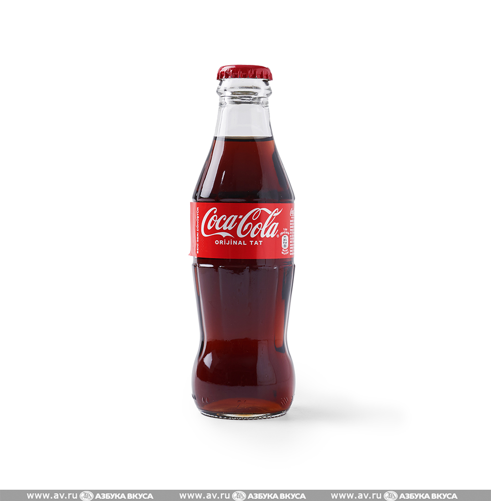
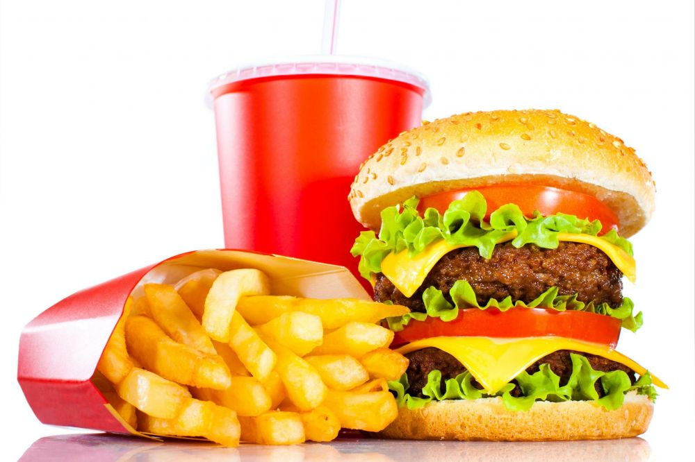
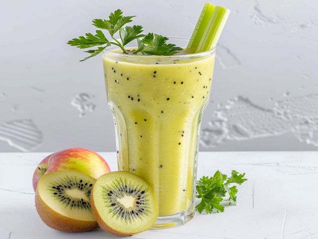
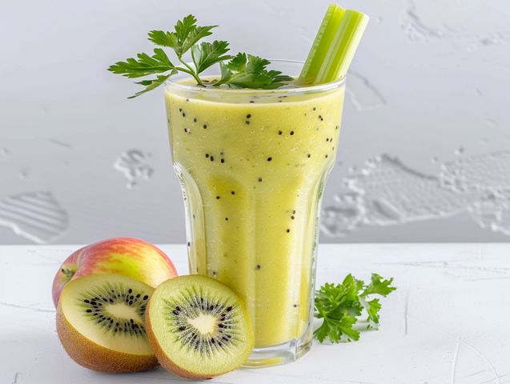
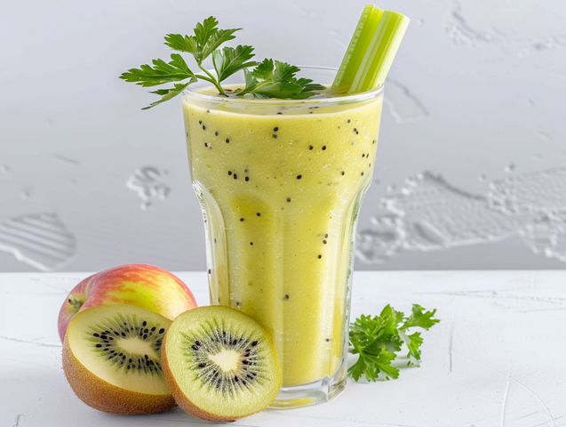

Добро пожаловать!
Здесь вы узнаете о вреде чрезмерного употребления газировки и фастфуда, а также найдете полезные альтернативы для здорового образа жизни.
О нашем проекте
Этот сайт предназначен для информирования о вреде вредной еды и мотивации к переходу на более здоровое питание. Мы собрали научные исследования и советы экспертов, чтобы помочь вам сделать правильный выбор.
Научные статьи и исследования
- Влияние газировки на здоровье: исследования показывают, что избыточное употребление газированных напитков способствует развитию диабета и ожирения.
- Фастфуд и сердечно-сосудистые заболевания: регулярное питание фастфудом увеличивает риск гипертонии и атеросклероза.
- Питание и психоэмоциональное состояние: диета с высоким содержанием сахара связана с ухудшением настроения и снижением энергии.


 

Здоровые альтернативы

Включайте в рацион больше свежих фруктов, овощей, орехов и натуральных напитков, чтобы поддерживать здоровье и энергию без вредных веществ.